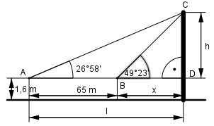

Aufgabe 98 Um die Höhe h eines Kirchturms zu bestimmen, hat der Vermesser eine65 m lange Standlinie abgesteckt, die direkt auf den Turm zuläuft. Von ihren Eckpunkten aus erscheint die Spitze unter den Höhenwinkelnα = 49°23' und β = 26°58'. Augenhöhe = 1,6 m. Wie hoch ist der Turm?

58 58’ = ----° = 0,9667° 60 23 23’ = ----° = 0,3833° 60 Im Dreieck BDC: h tan 49,3833° = --- |*x x h = x * tan 49,3833° (1) Im Dreieck ADC: h tan 26,9667° = --------- | *(65 + x) 65 + x h = (65 + x) * tan 26,9667° (2) (1) und (2) gleichgesetzt: x * tan 49,3833° = (65 + x) * tan 26,9667° x * 1,166 = (65 + x) * 0,5088 1,166 x = 33,1 + 0,5088 x | -0,5088x 0,6572 x = 33,1 | :0,6572 x = 50,4 m Eingesetzt in (1) : h = 50,4 m * tan 49,3833° = 50,4 m * 1,166 = = 58,8 m Turmhöhe = h + 1,6 m = 58,8 m + 1,6 m = 60,4 m